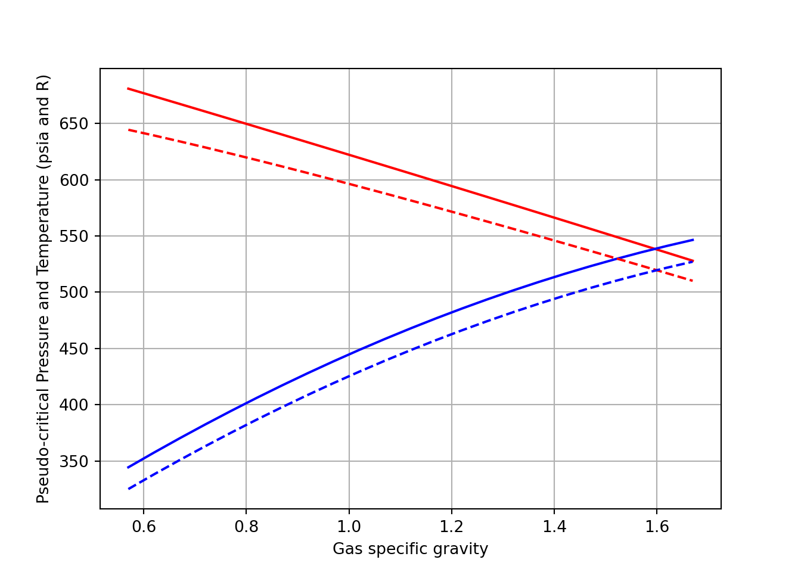

7 Fundamental Properties of Fluid
7.1 Review of Gas Properties
7.1.1 Real Gas law
There are no gas that behaves as Ideal gas. The volume of Real gas is more that Ideal gas. The number that measure the amount of gas deviates from perfect gas is actually a ratio. this ratio is called as compressibility factor or gas deviation factor. this is a dimensionless quantity.
If the gas deviation factor is not measured it can be estimated from the specific gravity of the gas. Sutton developed a correlation that estimates
\[\begin{equation} \tag{7.1} Ppc = 756.8 -131*Sg - 3.6 * Sg^2 \\ Tpc = 169.2 -349.5*Sg - 74 * Sg^2 \end{equation}\]
We will write a small code to plot this correlation.
import numpy as np
import matplotlib.pyplot as plt
Sg = np.arange(0.57,1.68,0.05)
Ppc = [756.8 -131*sg - 3.6 * sg*sg for sg in Sg]
Tpc = [169.2 + 349.5*sg - 74 * sg*sg for sg in Sg]
plt.plot(Sg, Ppc, 'r-')
[<matplotlib.lines.Line2D object at 0x000001F5C776B0D0>]
plt.plot(Sg, Tpc, 'b-')
[<matplotlib.lines.Line2D object at 0x000001F5C7BA4130>]
plt.grid()
plt.ylabel('Pseudo-critical Pressure and Temperature (psia and R)')
Text(0, 0.5, 'Pseudo-critical Pressure and Temperature (psia and R)')
plt.xlabel('Gas specific gravity')
Text(0.5, 0, 'Gas specific gravity')
plt.show()
Wiechert-Aziz have developed a correlation to account for gases that contain CO2 and H2S
\[\begin{equation} e = 120(A^{0.9} - A^{1.6}) + 15(B^{0.5} - B^4) \end{equation}\]
A = sum of mole fraction of H2S and CO2
B = sum of mole fraction of H2S
with this correation the modified equation becomes:
\[\begin{equation} \tag{7.2} T'_{pc} = T_{pc} -e \\ P'_{pc} = \frac{P_{pc}T'_{pc}}{(T_{pc}- B(1-B)e)} \end{equation}\]
Lets assume H2S mole fraction of 0.05 and CO2 mole fraction of 0.1 and compare the plots
# same code as above
x_h2s=0.05
x_co2 =0.1
e = (120 * (((x_h2s + x_co2)**0.9) - ((x_h2s + x_co2)**1.6))) + (15 * (x_h2s**0.5 - x_h2s**4))
T_pc_corr = [T - e for T in Tpc]
P_pc_corr = [(Ppc[i] * T_pc_corr[i]) / (Tpc[i] - x_h2s * e * (1-x_h2s)) for i in range(len(Tpc))]
fig, ax = plt.subplots()
ax.plot(Sg, Ppc, 'r-')
[<matplotlib.lines.Line2D object at 0x000001F5C8293DF0>]
ax.plot(Sg, Tpc, 'b-')
[<matplotlib.lines.Line2D object at 0x000001F5C868B970>]
ax.plot(Sg, P_pc_corr, 'r--')
[<matplotlib.lines.Line2D object at 0x000001F5C82FA6D0>]
ax.plot(Sg, T_pc_corr, 'b--')
[<matplotlib.lines.Line2D object at 0x000001F5C868B100>]
ax.grid()
plt.ylabel('Pseudo-critical Pressure and Temperature (psia and R)')
Text(0, 0.5, 'Pseudo-critical Pressure and Temperature (psia and R)')
plt.xlabel('Gas specific gravity')
Text(0.5, 0, 'Gas specific gravity')
plt.show()
7.1.2 Gas z Factor
Dranchuk and Aboukassem equation of state
The form of equation is as follow: \[\begin{equation} \begin{split} z = 1 + c_{1}(T_{pr}) p_{r} + c_{2}(T_{pr})p_{r}^2 - c_{3}(T_{pr})p_{r}^5 + c_{4}(T_{pr}p_{r}) \\ where : \\ p_{r} = 0.27 P_{pr}/(zT_{pr}) \\ c_{1}(T_{pr}) = A_{1} + A_{2}/T_{pr} + A_{3}/T_{pr}^3 + A_{4}/T_{pr}^4 + A_{5}/T_{pr}^5\\ c_{2}(T_{pr}) = A_{6} + A_{7}/T_{pr} + A_{8}/T_{pr}^2 \\ c_{3}(T_{pr}) = A_{9}(A_{7}/T_{pr} + A_{8}/T_{pr}^2) \\ c_{4}(T_{pr}p_{r}) = A_{10}( 1 + A_{11}p_{r}^2)(p_{r}^2/T_{pr}^3) exp(-A_{11}p_{r}^2) \\ \end{split} \tag{7.3} \end{equation}\]
where
\[\begin{equation} A_{1} = 0.3265; A_{2} = -1.0700; A_{3} = -0.5339; A_{4} = 0.01569; A_{5} = -0.05165; A_{6} = 0.5475 \\ A_{7} = -0.7361; A_{8} = 0.1844; A_{9} = 0.1056; A_{10} = 0.6134; A_{11} = 0.7210 \end{equation}\]
The above equation has z-factor on both side of the equation. To solve such equation a trial and error solution is required. However, in Python we can solve this equation using fsolve function of scipy library, which is a non-linear solver.
import numpy as np
from scipy.optimize import fsolve # non-linear solver
def getZ_dranchuk(T_pr, P_pr):
a1 = 0.3265; a2 = -1.0700; a3 = -0.5339; a4 = 0.01569; a5 = -0.05165; a6 = 0.5475
a7 = -0.7361; a8 = 0.1844; a9 = 0.1056; a10 = 0.6134; a11 = 0.7210
def func(y):
rho_pr, z = y
c1 = a1 + (a2/T_pr) + (a3/(T_pr**3))+ (a4/(T_pr**4))+ (a5/(T_pr**5))
c2 = a6 + (a7/T_pr) + (a8/(T_pr**2))
c3 = a9*((a7/T_pr) + (a8/(T_pr**2)))
c4 = (a10)*(1+(a11*(rho_pr**2)))*((rho_pr**2)/(T_pr**3))*(np.exp(-a11*(rho_pr**2)))
f1 = z + (c3*(rho_pr**5)) - (c2*(rho_pr**2)) - (c1*(rho_pr**1)) - c4 - 1
f2 = rho_pr - ((0.27 * P_pr) / (z * T_pr))
return[f1, f2]
def dranchuk():
solve = fsolve(func, [1, 1]) # initial guess
return(solve[0], solve[1])
return dranchuk()[1]
# lets Assume
T_pr = 1.8
P_pr = 4.87
print(f'Gas Deviation factor Z : = {getZ_dranchuk(T_pr, P_pr)}')
Gas Deviation factor Z : = 0.91101072901767617.1.3 Gas Density
Density of a real gas can be calculated using the formula given below: \[\begin{equation} \tag{7.4} \rho_g = \frac{1}{v} = \frac{pM_a}{zRT} \end{equation}\]
Using the data in below assuming real gas behavior, let’s calculate the density of the gas phase under initial reservoir conditions.
# Component [CO2, N2, C1, C2, C3, i-C4, n-c4]
gasComposition = [0.02, 0.01, 0.85, 0.04, 0.03, 0.03, 0.02]
MW = [44.01, 28.01, 16.04, 30.1, 44.1, 58.1, 58.1]
Tc = [547.91, 227.49 , 343.33, 549.92, 666.06, 734.46, 765.62] #Rankine
Pc = [1071, 493.1, 666.4, 706.5, 616.4, 527.9, 550.6]
Ma = sum([y*M for y, M in zip(gasComposition, MW)])
Tpc = sum([y*T for y, T in zip(gasComposition, Tc)])
Ppc = sum([y*P for y, P in zip(gasComposition, Pc)])
P = 3000 # Reservoir Pressure in psi
T = 640 # Reservoir Temperature in R
R = 10.73 #
T_pr = T/Tpc
P_pr = P/Ppc
Z = getZ_dranchuk(T_pr, P_pr)
density = P*Ma/(Z*R*T)
# Results
print('-'*50)
--------------------------------------------------
print(f'Apparent molecular weight : = {round(Ma, 2)}')
Apparent molecular weight : = 20.23
print(f'Pseudo-critical pressure : = {round(Ppc, 2)} psi')
Pseudo-critical pressure : = 666.39 psi
print(f'Pseudo-critical temperature : = {round(Tpc, 2)} R')
Pseudo-critical temperature : = 384.39 R
print(f'Pseudo-reduced pressure : = {round(P_pr, 2)}')
Pseudo-reduced pressure : = 4.5
print(f'Pseudo-reduced temperature : = {round(T_pr, 2)}')
Pseudo-reduced temperature : = 1.66
print(f'Gas Deviation factor : = {round(Z, 2)}')
Gas Deviation factor : = 0.86
print(f'Gas Density : = {round(density, 2)} lb/ft3')
Gas Density : = 10.28 lb/ft37.1.4 Isothermal Gas Compressibility
Isothermal compressibility is defined as change in volume with pressure for gas under isothermal condition.
\[\begin{equation} \tag{7.5} V = znR'T/P \\ or \\ V = constant * z/P \end{equation}\]
Mattar, Brar, and Aziz developed an analytical expression for calculating pseudo-reduced compressibility.

By taking the derivative of equation of state developed by Dranchuck and Abou-Kassem developed the following equation.

# code for Isothermal Gas Compressibility using Dranchuck and Abou-Kassem equation
import numpy as np
a1 = 0.3265; a2 = -1.0700; a3 = -0.5339; a4 = 0.01569; a5 = -0.05165; a6 = 0.5475
a7 = -0.7361; a8 = 0.1844; a9 = 0.1056; a10 = 0.6134; a11 = 0.7210
def mattar(T_pr, P_pr, rho_pr, z, P_pc_corr):
do = ((a1 + (a2/T_pr) + (a3/T_pr**3) +(a4/T_pr**4) + (a5/T_pr**5)) * rho_pr) + \
(2 * ((a6 + (a7/T_pr) + (a8/T_pr**2))) * rho_pr**2) - \
(5 * a9 * (((a7/T_pr) + (a8/T_pr**2))) * rho_pr**4) + (1 + (a11 * rho_pr**2) - (a11 * rho_pr**2)**2) \
* ((2 * a10 * rho_pr / T_pr**3)*np.exp(-a11 * rho_pr**2))
c_pr_analytical = (1 / P_pr) - ((0.27 / (z**2 * T_pr)) * (do / (1 + ((rho_pr / z) * do))))
cgas_analytical = c_pr_analytical / P_pc_corr
return(cgas_analytical)
print(mattar(1.44, 7.08, 0.80, 0.91, 636))
0.000211579876615675987.1.5 Gas formation volume factor
Gas formation volume factor relates the volume of gas in the reservoir to the volume of gas on the surface at standard conditions so, Bg can be written as Bg = 0.02829 zT/p in ft3/scf = 0.00504 zT/P bbl/scf.
z= 0.91
P = 3250 # psia
T = 213 # F
Bg = 0.02829*z*(T+460)/P
print (f'Gas formation volume Factor : {Bg}')
Gas formation volume Factor : 0.005330967600000001